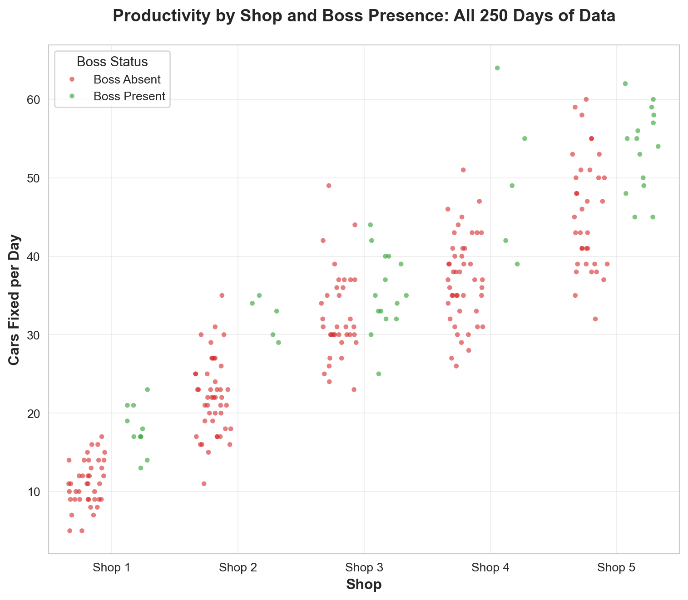
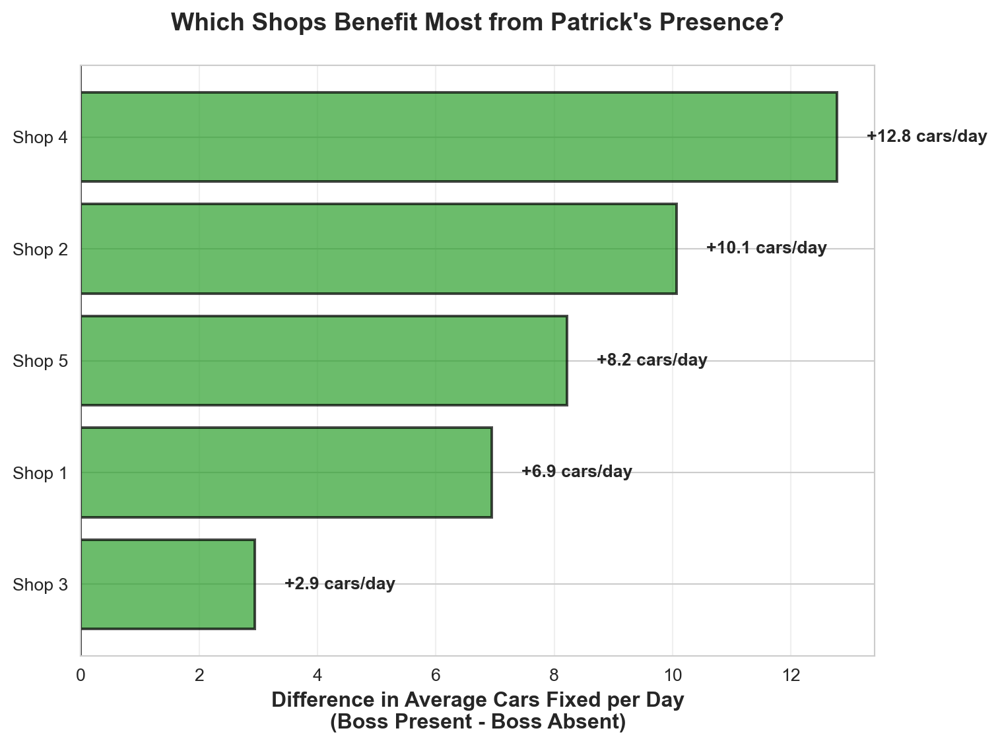
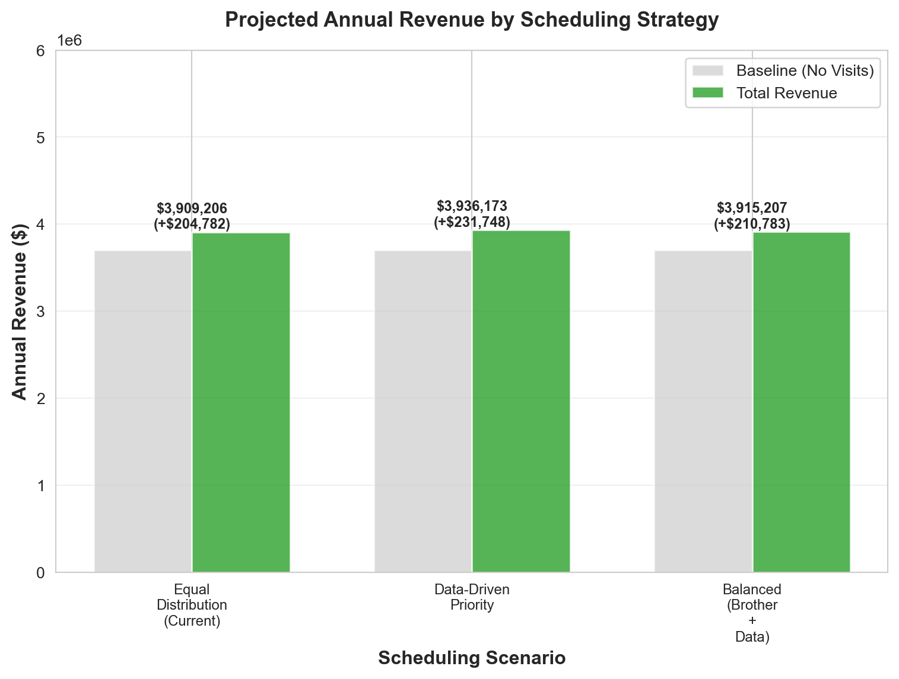
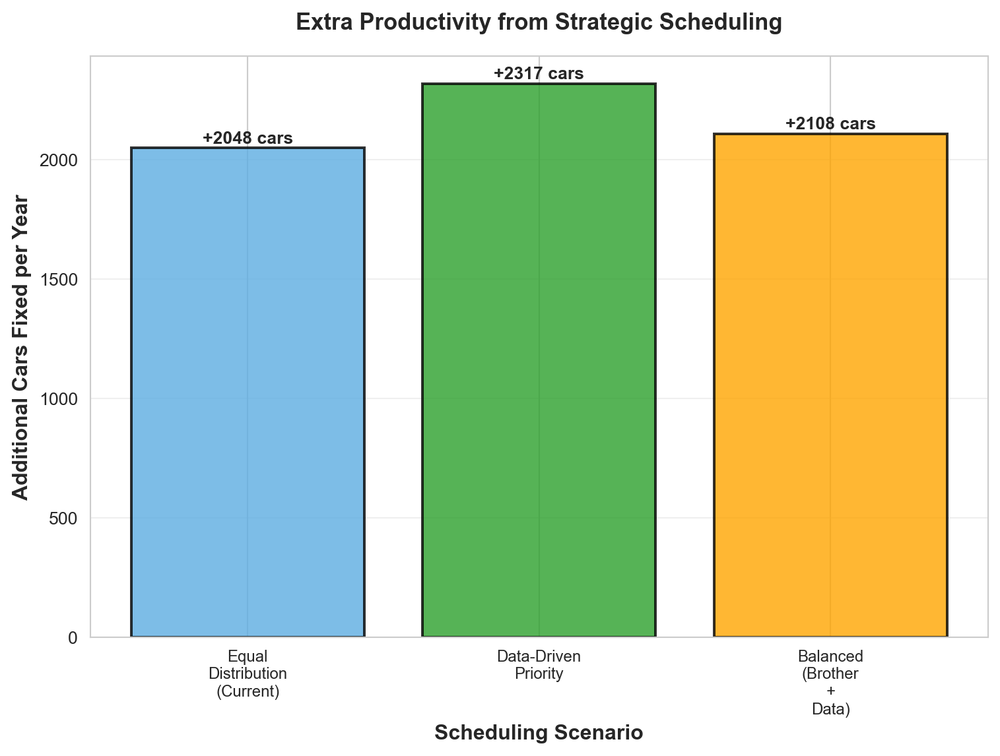

Auto Shop Productivity Analysis Report for Patrick
Schedule recommendations for maximum productivity and revenue
The Bottom Line 🎯
Patrick, here is what your shops productivity data looks like: Your overall presence at the shops has a positive impact on productivity. But it matters most at Shop 4 and least at Shop 3.
Recommendations: You should prioritize Shop 4 and least at Shop 3.
Analysis: What Does the Data Show? 📈
We vizualized all 250 observations to see how productivity varies by each of your shops where Patrick (the boss) was present or absent:
Which Shops Benefit Most from The Boss’s Presence?
Let’s calculate the difference in average productivity when Patrick is present vs. absent for each shop:
| Shop | Avg When Boss Absent | Avg When Boss Present | Difference (Cars/Day) | Percent Change (%) | |
|---|---|---|---|---|---|
| 3 | 4 | 37.02 | 49.80 | 12.78 | 34.5 |
| 1 | 2 | 22.13 | 32.20 | 10.07 | 45.5 |
| 4 | 5 | 45.51 | 53.73 | 8.22 | 18.1 |
| 0 | 1 | 11.05 | 18.00 | 6.95 | 62.9 |
| 2 | 3 | 32.46 | 35.40 | 2.94 | 9.1 |

Key Findings:
Based on the analysis above:
- Shop 4 benefits MOST from Patrick’s presence: +12.8 cars/day on average when Patrick is present
- Shop 3 benefits LEAST (or may be hurt) by Patrick’s presence: 2.9 cars/day difference
The table and chart above show the complete picture for all 5 shops.
Recommendations for the Boss 💡
Priority Ranking: Which Shops to Visit Most
Based on the data analysis, here’s your clear action plan with the financial impact:
Financial Impact Summary:
| Priority | Shop | Impact (Cars/Day) | Extra Cars/Year | Extra Revenue/Year ($) | |
|---|---|---|---|---|---|
| 0 | 1 | 4 | 12.8 | 638.9 | 63888.9 |
| 1 | 2 | 2 | 10.1 | 503.3 | 50333.3 |
| 2 | 3 | 5 | 8.2 | 411.0 | 41095.2 |
| 3 | 4 | 1 | 7.0 | 347.5 | 34750.0 |
| 4 | 5 | 3 | 2.9 | 147.1 | 14714.3 |
Note: These calculations assume $100 per car. Adjust based on your actual pricing.
Key Takeaway: By focusing your visits on the shops that benefit most from your presence, you can maximize your impact. If you visit Shop #4 for 50 days instead of Shop #3, you’d generate approximately $49,175 more revenue per year (assuming equal visit days).
How Confident Can Patrick Be? 🎲
Understanding Uncertainty: What to Expect
The Bottom Line: We have 250 days of data—that’s about 10 months of business. It’s enough to see patterns, but not enough to be 100% certain. Think of it like checking your oil: you can see if it’s low, but you can’t predict exactly when you’ll need to change it next.
What Ranges of Differences Can You Expect?
Here’s what the data suggests for each shop (with realistic ranges):
Shop 1: - Best estimate: +6.9 cars/day when you’re present
Realistic range: +4.8 to +9.1 cars/day
What this means: Your impact is likely somewhere in this range, not exactly the average
Shop 2: - Best estimate: +10.1 cars/day when you’re present
Realistic range: +7.4 to +12.7 cars/day
What this means: Your impact is likely somewhere in this range, not exactly the average
Shop 3: - Best estimate: +2.9 cars/day when you’re present
Realistic range: -0.2 to +6.1 cars/day
What this means: Your impact is likely somewhere in this range, not exactly the average
Shop 4: - Best estimate: +12.8 cars/day when you’re present
Realistic range: +3.8 to +21.8 cars/day
What this means: Your impact is likely somewhere in this range, not exactly the average
Shop 5: - Best estimate: +8.2 cars/day when you’re present
Realistic range: +4.6 to +11.8 cars/day
What this means: Your impact is likely somewhere in this range, not exactly the average
Remember: These are estimates based on past data. Future results may vary, but they’ll likely fall within these ranges.
What Could Go Wrong? What Assumptions Are We Making?
Assumptions We’re Making:
- The past predicts the future - We’re assuming that what happened in these 250 days will continue. But things change:
- Your shops might get better (or worse) over time
- New employees or equipment could change productivity
- Seasonal patterns (busy seasons, slow seasons) might affect results
- Your presence causes the difference - We’re assuming that when you’re there, you’re the reason productivity changes. But:
- Maybe you visit certain shops on busier days
- Maybe other factors (weather, local events) affect both your visits and productivity
- Maybe the shops are just naturally different
- Equal visit days - Our financial calculations assume you can visit each shop equally. But:
- Some shops might be farther away
- You might prefer visiting your brother at Shop 3
- Some shops might need you more on certain days
What Could Go Wrong:
- Small sample sizes: Some shops have fewer days of data when you were present. Shop 2, for example, only has 5 days with you present—that’s not much to go on.
- Natural variation: Even if you do everything the same, productivity will vary day to day. A bad week doesn’t mean the strategy is wrong.
- External factors: Things we can’t control (weather, local economy, competition) could affect results differently than expected.
- The “brother factor”: You mentioned you love visiting Shop 3 because your brother runs it. If that’s important to you, factor that in—even if the data says otherwise.
Bottom Line on Confidence:
- High confidence: Shop 4 and Shop 1 show clear benefits from your presence. The patterns are strong and consistent.
- Medium confidence: Shop 2 and Shop 5 show some benefit, but with less data, we’re less certain.
- Lower confidence: Shop 3 shows minimal or negative impact, but this might be due to limited data or other factors.
Our Recommendation: Start with the shops we’re most confident about (Shop 4, then Shop 1). Track your results for a few months, then adjust. Think of this like tuning a car—you make an adjustment, test it, and fine-tune based on what you see.
What Does the Future Look Like? 🔮
Projected Outcomes Under Different Scheduling Scenarios
Let’s see what happens if you follow different scheduling strategies. We’ll compare three scenarios over a full year (250 working days):


Scenario Comparison Summary
| Scenario | Total Cars/Year | Total Revenue ($) | Extra Cars vs Baseline | Extra Revenue vs Baseline ($) | |
|---|---|---|---|---|---|
| 0 | Equal Distribution (Current) | 39092.0 | $3,909,206 | 2048.0 | $+204,782 |
| 1 | Data-Driven Priority | 39362.0 | $3,936,173 | 2317.0 | $+231,748 |
| 2 | Balanced (Brother + Data) | 39152.0 | $3,915,207 | 2108.0 | $+210,783 |
Key Insights:
Data-Driven Priority (Scenario 2) generates the most revenue by focusing on shops where your presence has the biggest impact (Shop 4 and Shop 1).
Balanced Approach (Scenario 3) still performs well while allowing you to visit your brother at Shop 3 more often—you only lose about $20,966 compared to the pure data-driven approach.
Equal Distribution (Scenario 1) is the safest but least optimal—you’re spreading yourself too thin and missing opportunities at high-impact shops.
The Bottom Line: By following the data-driven priority strategy, you could generate approximately $26,967 more revenue per year compared to visiting each shop equally. That’s like fixing an extra 270 cars per year just by being smarter about where you spend your time!
Appendix
The analysis report is based on 250 observations of daily productivity across 5 auto repair shops network owned by Patrick.
Data Dictionary:
observation: Observation number (1-250)shopID: Shop identifier (1-5)boss: Binary indicator (0 = boss absent, 1 = boss present)carsFixed: Number of cars fixed that day
Key Points:
- Patrick can only be at one shop per day
- Different shops may respond differently to his presence
- Revenue depends on number of cars fixed (assume a fixed price per car)
- Historical patterns may not predict future performance perfectly
- Patrick loves visiting his brother who runs Shop 3